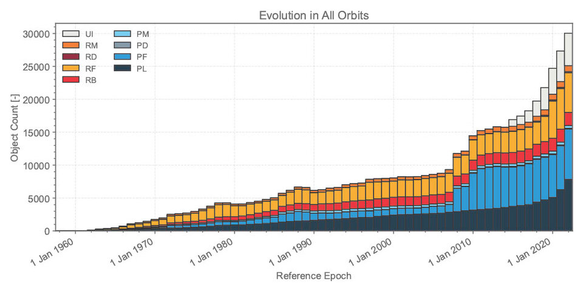
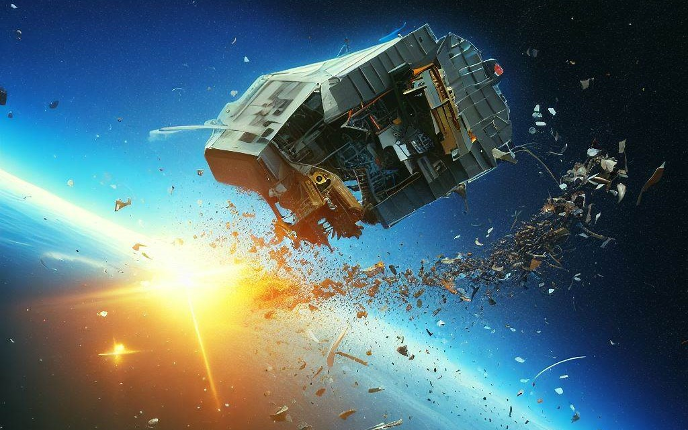
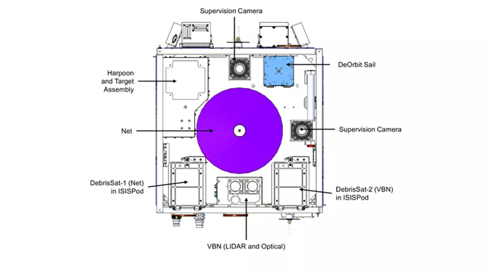
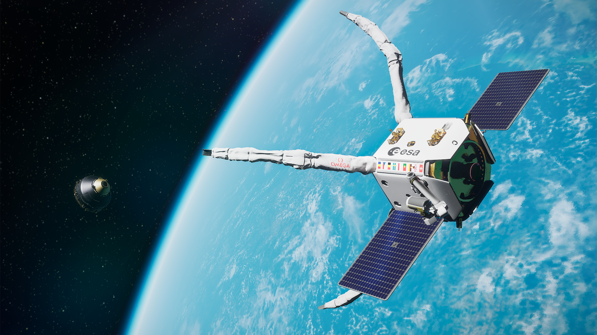

Bakgrund
 Sedan Sovjetunionen skickade upp den första satelliten i omloppsbana 4 oktober 1957 (Tekniska museet, 2023) har ungefär 7500 till skickats upp varav 4300 fortfarande är i omloppsbana och av dessa fungerar endast 1200 stycken (Brunell, 2018).
År 2022 fanns det över 30 000 delar rymdskrot vars diameter överstiger tio centimeter i omloppsbana runt jorden (European Space Agency, 2022). Dessutom rör sig skräpet i 28 200 kilometer i timmen vilket innebär att även ett litet objekt kan orsaka stora skador på till exempel en raket som ska ta sig förbi satelliternas omloppsbana (Bergström, 2020).
Hur löser vi problemet?
 För att städa rymden utvecklas idag flera teknologier som alla bygger på att ändra skrotets bana för att det ska brinna upp i jordens atmosfär. Ett flertal aktörer är aktiva inom ADR (Active Debris Removal) idag och det kommer ständigt privata och statliga initiativ. Här nedan har vi beskrivit ett urval av de mest lovande projekten.
RemoveDEBRIS
 RemoveDEBRIS var ett projekt som genomfördes av Surrey Space Centre tillsammans med Airbus mellan 2018 och 2021 (Wikipedia, hämtat 18/4-2023). Projektet syftade till att demonstrera flera nya teknologier utvecklade för städning av rymden samt att testa effektiviteten hos flera av dessa teknologier på simulerat rymdskrot i låg omloppsbana.
För att åstadkomma detta var removeDEBRIS-plattformen utrustad med ett nät, en harpun, en laseravståndsmätare, ett dragsegel och två mindre forskningssatelliter. Uppdraget var planerat att pågå i ett och ett halvt år och var i stora drag lyckat men dragseglets misslyckande med att vecklas ut försenade återinträdet med strax över två år.
Nätet användes för att fånga in en bit simulerat rymdskrot för att ändra dess bana så att det föll in i jordens atmosfär och brann upp. Laseravståndsmätaren användes tillsammans med plattformens kameror för att få data och bilder för analys och harpunen användes för att avfyra en harpun ansluten i en lina mot en platta placerad på en arm fäst vid plattformen. Slutligen skulle dragseglet vecklas ut för att ta plattformen från sin omloppsbana in i jordens atmosfär för att där sönderfalla. Alla experiment utom det sista lyckades och därför betraktas uppdraget som en framgång.
PhaseFour
Ett annat initiativ kommer från företaget Phase Four som vill använda radiovågor för att göra gas till plasma för att i sin tur använda den för att ändra små uttjänta satelliters kurs till att brinna upp i atmosfären (Bergström, 2020). Denna teknologi är enligt Phase Four delvis i bruk idag, åtta av deras framdrivningssystem är idag satta i produktion i omloppsbana kring jorden.
ClearSpace-1
 Ett tredje initiativ för att städa rymden kommer från ESA som inom ramarna av uppdraget ClearSpace-1 för första gången autonomt ska plocka ner en satellit från omloppsbana på ett säkert sätt. Trots att projektet leds av ESA har de lejt ut utförandet av uppdraget till den schweiziska start-up:en ClearSpace SA för att demonstrera teknologin och etablera en kommersiell sektor inom rymdstädning. Planen är att skjuta upp modulen år 2026 och då påbörja städningen av rymden. (European Space Agency, hämtat 19/4-2023)
Riktlinjer
För att minska problemet med rymdskrot i omlopp runt rymden har riktlinjer tagits fram som tydliggör vad som ska gälla när en satellit slutfört sitt uppdrag har ESA dessutom tagit fram riktlinjer som ska hållas i åtanke under hela satellitens livscykel (European Space Agency, hämtat 18/4-2023).
Källor
Bergström, L. (2020, Oktober 23). Nedskräpning av rymden – ett accelererande problem — Forummag. Forummag. Hämtad 18/4-2023, från https://forummag.ksfmedia.fi/nedskrapning-av-rymden-ett-accelererande-problem
Brunell, E. (2018, Januari 17). För elva år sedan sköt Kina en satellit i tusen bitar – nu planeras en laserstation för att städa upp rymdskrotet (Från 2018). Svenska Yle. Hämtad 18/4-2023, från https://svenska.yle.fi/a/7-1271761
European Space Agency. (n.d.). ESA - ClearSpace-1. European Space Agency. Hämtad 19/4-2023, från https://www.esa.int/Space_Safety/ClearSpace-1
European Space Agency. ESA - Mitigating space debris generation. European Space Agency. Hämtad 18/4-2023, från https://www.esa.int/Space_Safety/Space_Debris/Mitigating_space_debris_generation
European Space Agency. (2022, April 22). ESA - ESA's Space Environment Report 2022. European Space Agency. Hämtad 18/4-2023, från https://www.esa.int/Space_Safety/Space_Debris/ESA_s_Space_Environment_Report_2022
Tekniska museet. (2023, Februari 1). Satelliten. Tekniska museet. Hämtad 18/4-2023, från https://www.tekniskamuseet.se/lar-dig-mer/100-innovationer/satelliten/
Wikipedia. RemoveDEBRIS. Wikipedia. Hämtad 18/4-2023, från https://en.wikipedia.org/wiki/RemoveDEBRIS